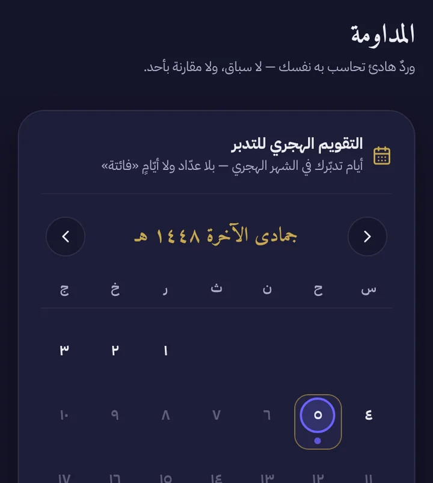

3 · The audit
Then I checked my own app. It had a streak.
Writing this case study, I checked every promise against the code. The screen whose subtitle says “no race, no comparison” had a flame and a consecutive-days counter. Nobody chose to add it. It came in on 20 October inside a commit about themes and fonts, and nothing was watching.


The audit found five problems in all. I fixed each one in its own commit:
- Removed the streak counter, its chart and the monthly percentage. e2296c2
- New users now start with an empty history. They used to get three days and two journal entries they never did. f05f291
- The app gave the reflection three different lengths. Every screen now says eighty seconds, which is what the scripts actually run. 4209f2c
- The landing page claimed scholar review that hasn’t happened. Unreviewed text is now marked as such. 5c1347d
- Finishing a reflection, the one thing that matters, recorded nothing. It now does, with consent and without any text. 16dd14a
The lesson: a promise in onboarding copy is a requirement. It needs a test like any other. The build now fails if any of these five comes back. 2ba90c4